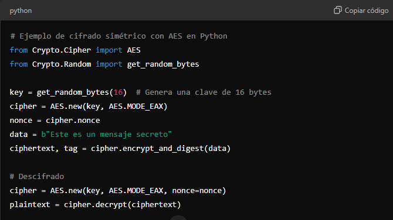
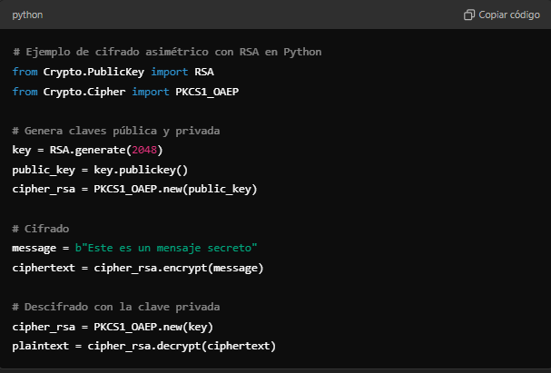
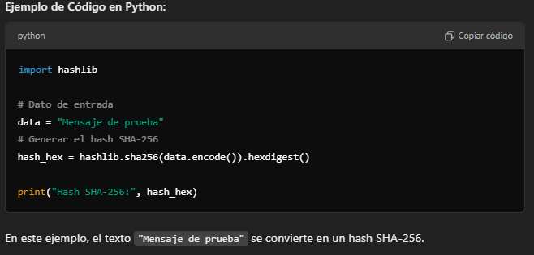

Criptografía
La criptografía es una técnica de protección de la información que permite asegurar la confidencialidad y la integridad de los datos, transformándolos en un formato ilegible para quienes no posean las claves necesarias para descifrarlos. En el contexto de la protección jurídica y de software, la criptografía ayuda a proteger los datos de usuarios y creadores, previniendo accesos no autorizados y posibles infracciones de derechos de autor.
Criptografía Simétrica
En la criptografía simétrica, se utiliza una única clave para cifrar y descifrar el mensaje. Este método es rápido y adecuado para proteger grandes volúmenes de datos, aunque requiere que ambas partes compartan la misma clave, lo cual puede ser un riesgo si la clave es interceptada. Un ejemplo común es el cifrado AES (Advanced Encryption Standard). 
Criptografía Asimétrica
La criptografía asimétrica utiliza un par de claves: una clave pública para cifrar los datos y una clave privada para descifrarlos. Esto elimina la necesidad de compartir la clave privada, aumentando la seguridad en las comunicaciones. Uno de los algoritmos más comunes es RSA (Rivest-Shamir-Adleman).
¿Qué es SHA-256?
SHA-256 (Secure Hash Algorithm 256-bit) es una función de hash criptográfica que convierte cualquier dato de entrada en un "resumen" de 256 bits o 64 caracteres. Es unidireccional, lo que significa que no se puede revertir para obtener el dato original. Este hash único es ideal para verificar la integridad de archivos y datos.
¿Cómo funciona?
SHA-256 toma un dato de cualquier tamaño, lo procesa en bloques y realiza operaciones matemáticas complejas para generar un hash único. Incluso un cambio mínimo en el dato original produce un hash completamente diferente, lo cual es útil para detectar alteraciones.
